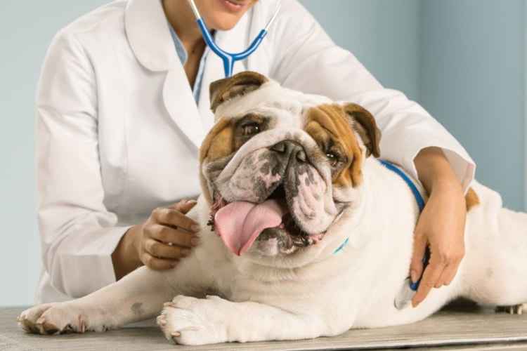
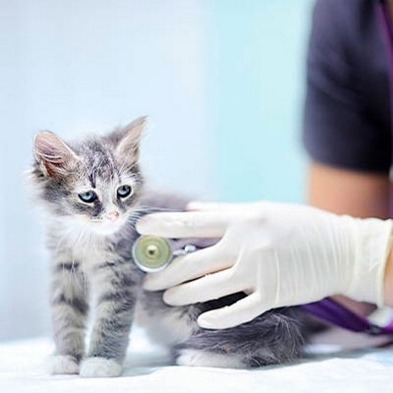
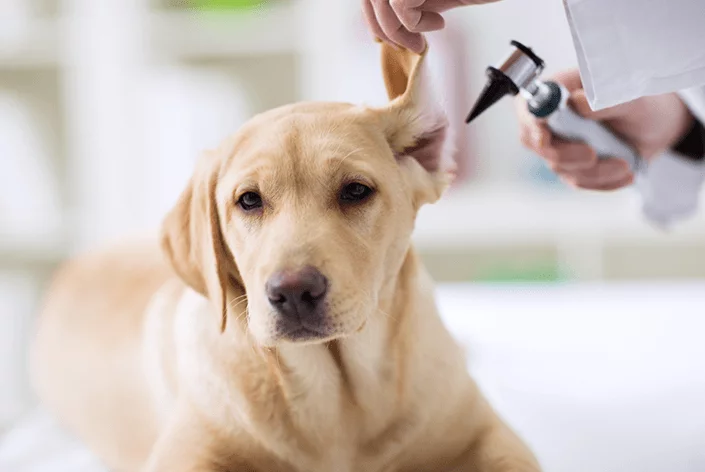

Sobre Clínica
Temos o compromisso de oferecer saúde, conforto e qualidade no atendimento dos seus pets. Nossa clínica conta com um ambiente agradável e acolhedor, conta com mais de 800 metros quadrados, onde se localiza a recepção, os consultórios e a área de lazer dos nosso amiguinhos, estacionamento próprio e o principal prezamos pelo bom atendimento!
Tratamentos que realizamos
- Atendimento clínico e médico
- Consultas
- Vacinação
- Aferição de pressão arterial
- Exames laboratórial e de imagem como : raio-x, ultrassom, ecocardiograma e eletrocardiograma
- Castração
- Profilaxia dentária
  